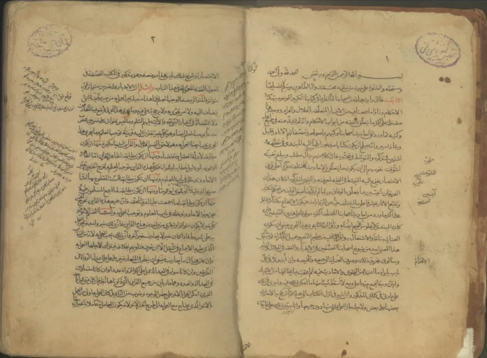
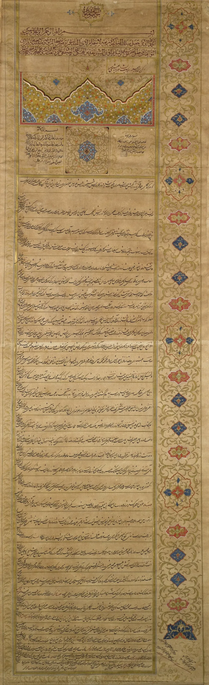

Muslim scholars have a real answer here. Say so before your friend does.
It is a marriage contracted for a fixed term and a fixed payment. It dissolves on its own when the term ends.
Muhammad permitted it. Companions on campaign were allowed to marry women for a fixed time, even for a garment (Sahih Muslim 1404).
Jabir reports that the practice continued through Abu Bakr's reign until Umar banned it (Sahih Muslim 1405).
Sunni Islam holds that Muhammad finally forbade it (Sahih al-Bukhari 5115; Sahih Muslim 1406, "Allah has forbidden it until the Day of Resurrection"). The date of that ban is variously given as Khaybar, the conquest of Mecca, or Umar's caliphate.
Shia Islam rejects the ban. It grounds mut'ah in Quran 4:24 and practises it today, where in documented cases it works as paid sex with a religious wrapper.
IslamQA 20738 gives the Sunni case. Mut'ah belongs to Islam's staged teaching, like the phased ban on alcohol.
It was allowed briefly under wartime hardship, then abrogated by the Prophet himself, with all four Sunni schools agreed. Umar only enforced the Prophet's ruling.
Shia scholars answer the opposite. Quran 4:24 sanctions it, no abrogating verse exists, and Umar had no authority to forbid what Muhammad allowed.
Regulated mut'ah, with dower, term and waiting period, is a lawful institution.
Genuinely arguable, and be fair to Sunnis. Bukhari and Muslim do record a prohibition, so it is unjust to charge Sunni Islam with what it forbids.
But both sects agree Muhammad permitted fixed-term sexual contracts for some period. The chronology of the ban is tangled.
And a large part of the Muslim world practises it now on Quranic grounds. Compare that with a covenant witnessed by God (Malachi 2:14).
"Sunnis and Shias disagree about mut'ah. How do you decide which report is final?"


Sunnis say the Prophet later banned it for good; Shias say he never did.
IslamQA 20738 gives the Sunni answer. Mut'ah belongs to Islam's staged teaching, like the ban on alcohol in phases. It was allowed briefly under wartime hardship. Then the Prophet himself abrogated it until the Day of Resurrection (Sahih Muslim 1406). All four Sunni schools agree it is forbidden. So Islam cannot be charged with what it abolished, and Umar's ban only enforced the Prophet's ruling.
Shia scholars answer the opposite. Quran 4:24 sanctions it. No abrogating verse exists. And Umar had no authority to forbid what Muhammad allowed. Regulated mut'ah, with a dower, a term and a waiting period, is a lawful institution and not prostitution.
Arguable, and be fair: Sunni Islam forbids what you would charge it with.
This is graded contested for a reason. The Sunni case is genuine, well-sourced and made from inside. Bukhari and Muslim do record a ban. It would be unfair to charge Sunni Islam with a practice it curses.
But the challenge is not fully answered. Muhammad did allow marriage for a fixed term, for some period. Both branches agree on that. And that is itself the moral fact, set against the Bible's picture of marriage. The dating of the ban is tangled inside the sources. And the Muslim world's second-largest branch practises mut'ah now, on Quranic ground. Sunnis cannot finally rebut that without leaning on Umar's authority.
The split also feeds the hadith case, since the two canons give opposite final rulings.